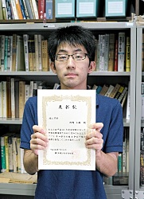
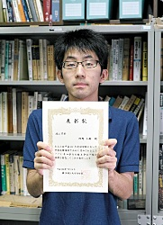

Update : 2 Jan. 2019
Update : 2 Jan. 2019中村研ニュース（2016年度）
中村が神岡鉱山でXMASS実験のシフトを実施［2017年3月］
3月26日（日）から28日（火）まで，中村が，神岡鉱山で進められている暗黒物質探索実験XMASSのシフトを行ないました。【祝】学部４年の狩野が成績優秀者の表彰［2017年3月］
学部４年の狩野芳樹が，3月24日（木）付けで，平成28年度卒業生の成績優秀者として同窓会から表彰を受けました。修士生２名と学部生４名が修了・卒業［2017年3月］
3月24日（金）に修了式・卒業式が行なわれ，中村研も修士生２名と学部生４名が無事に修了・卒業して学位が授与されました。 修了・卒業したメンバーは次の通りで，卒業した４年生は３人が就職し，１人は進学して中村研に残ります。- 修士修了
- 藤野 琢郎，山下 徹
- 学部卒業
- 安達 佑哉，狩野 芳樹，今野 天誠，中村 進
中村とM2の藤野，M1の金井が日本物理学会で登壇［2017年3月］
3月17日（金）から20日（月・祝）まで，日本物理学会第72回年次大会が大阪大学豊中キャンパスで開催され，最終日の20日に，博士課程前期２年の藤野，博士課程前期１年の金井，そして，中村がそれぞれ登壇しました。藤野と金井の講演のタイトルは，藤野が「POLARBEAR実験でのTESボロメータの非線形応答によるCMB偏光観測への影響」，金井が「LiteBIRDの前景放射除去シミュレーションのための擬似観測マップ作成」で，それぞれ高エネルギー加速器研究機構他と共同で進めている宇宙マイクロ波背景放射観測に関係する研究について報告しました。また，中村の講演のタイトルは「液体キセノン中の散乱長の測定-2」で，こちらもそれぞれ高エネルギー加速器研究機構他と共同で進めている液体キセノンの光学特性に関係する研究について報告し，活発な質疑応答が行われました。
院生と学部生がシンポジウム「なぜ宇宙は加速するのか？ - 徹底的究明と将来への挑戦 -」に参加［2017年3月］
3月8日（水）から10日（金）に，高エネルギー加速器研究機構小林ホールにおいて新学術領域研究のシンポジウム「なぜ宇宙は加速するのか？ - 徹底的究明と将来への挑戦 -」が開催され，博士課程前期２年の山下，博士課程前期１年の金井，学部４年の高久が参加しました。OBの橋本安章氏が来訪［2017年3月］
3月6日（月）に，中村研OBの橋本安章氏（現・富士ゼロックス）が来訪しました。M1の院生が修士中間発表会で発表［2017年3月］
3月1日（水），2日（木）に工学府物理情報工学専攻物理工学コースの修士中間発表会が開かれ，2日（木）に中村研の博士課程前期１年の金井がポスター発表を行ないました。発表のタイトルは次の通りです。 ◎金井 啓晃：「CMBの観測データ解析シミュレーションのための偏光マップ生成ソフトウェアの開発」次期４年生を含む学生がJAXA/ISASを見学［2017年2月］
2月24日（金）に，中村研の次期４年生を含む学生が相模原の宇宙科学研究所において，宇宙のインフレーションモデルの検証を目指すLiteBIRD衛星計画に関する見学を行ないました。学部４年生の５人が卒論発表会で発表［2017年2月］
2月23日（木）に工学部知能物理工学科・理工学部物理工学EPの卒論発表会が開かれ，中村研の学部４年生の５人が発表を行ないました。発表のタイトルは次の通りです。
◎今野 天誠：「気体キセノンを用いた暗黒物質探索についての考察」◎中村 進：「気体キセノンの真空紫外光でのレイリー散乱長の計算」
◎安達 佑哉：「キセノンフラッシュランプモジュールの発光特性の研究」
◎狩野 芳樹：「液体キセノン中の一次散乱光測定のMonte-Carloシミュレーション」
◎髙久 諒太：「モスアイ構造によるマイクロ波の広周波数帯域における反射防止の研究」
M2の２人の院生が修論発表会で発表［2017年2月］
2月14日（火）〜16日（木）に工学府物理情報工学専攻物理工学コースの修論・修了ポートフォリオ発表会が開かれ，16日（木）に中村研の博士課程前期２年の２人の院生が発表を行ないました。発表のタイトルは次の通りです。
◎藤野 琢郎：「CMB偏光観測実験POLARBEARでの大角度観測における大気放射を用いた較正手法の研究」◎山下 徹：「宇宙マイクロ波背景放射の偏光測定のための前景放射除去アルゴリズム」
LiteBIRD計画が重点大型研究計画に採択！［2017年2月］
1月末の日本学術会議第241回幹事会で，提言「第23期学術の大型研究計画に関するマスタープラン（マスタープラン2017）」が承認され，中村研も関係するLiteBIRD計画が 重点大型研究計画（全部で28計画，物理学分野では5計画）に選ばれて，2月8日（水）に公表されました。中村がサイエンスカフェの感謝状授与式に参加［2017年1月］
1月30日（月）に，平成28年度にYNUサイエンスカフェのファシリテータとして貢献の多かった学生への感謝状の授与式が行われ，中村も参列しました。中村が「ダークマターの懇談会」に参加［2017年1月］
1月27日（金）と28日（土）に，神戸大学梅田インテリジェントラボラトリにおいて「ダークマターの懇談会」が開催され，XMASS実験でダークマター探索に従事する中村も参加し，ダークマター探索の将来展望を考えてきました。次期４年生の仮配属［2017年1月］
1月26日（木）に，中村研の平成29年度の新卒研生として４人が仮配属されました。M2の山下とM1の金井がカナダのMcGill Universityで発表［2017年1月］
1月23日（月）から25日（水）まで，宇宙マイクロ波背景放射のＢモード偏光の衛星観測計画を進めているLiteBIRDグループの国際ミーティングがカナダのMcGill UniversityのThomson Houseで開かれ，中村研の博士課程前期２年の山下と博士課程前期１年の金井が24日（火）にポスター発表しました。発表のタイトルは，山下が“New template foreground cleaning method”，金井が，"The generation of pseudo LiteBIRD maps; gm100"で，それぞれ，LiteBIRD実験のための新しい前景放射除去アルゴリズムと，観測データ解析シミュレーションのための偏光マップ生成ソフトウェアの開発について発表しました。
狩野が「放射線検出器とその応用」研究会で発表［2017年1月］
1月23日（月）〜25日（水）に第31回「放射線検出器とその応用」研究会（高エネルギー加速器研究機構放射線科学センターと応用物理学会・放射線分科会との共催）が高エネルギー加速器研究機構（つくば）で開催され，24日（火）に学部４年の狩野が発表しました。タイトルは「液体キセノンの散乱長と赤外発光の測定」で，高エネルギー加速器研究機構と共同で進めてきた，液体キセノンの赤外発光の測定と散乱長の測定について，これまでの研究経過と今後の展望について発表しました。宇宙科学シンポジウムでＭ2の山下が発表［2017年1月］
1月5日（木），6日（金）に宇宙航空研究開発機構で第17回宇宙科学シンポジウムが開かれ，両日に博士課程前期２年の山下（写真中央）が，宇宙のインフレーションモデルの検証を目指す共同研究，宇宙マイクロ波背景放射のＢモード偏光観測衛星計画LiteBIRDのポスター発表をしました。山下の発表のタイトルは，「LiteBIRDに向けた前景放射除去シミュレーション」でした。【連絡】中村研に関心をお持ちの３年生へ［2016年12月］
本Web内の研究テーマの情報は古いものがありますが，今年も非常に忙しいため更新には時間が掛かりそうです。そこで，研究内容に関する最新の情報は，研究室に直接来てお確かめ下さい。お手数ですが，よろしくお願いします。 なお，以前から，卒研配属を考えている学部３年生へ向けたメッセージを載せています。>> メッセージのページ
中村宅で中村研の忘年会［2016年12月］
12月28日（水）に，今年も中村宅で中村研の忘年会を開きました。現役生の限られた面々でこじんまりと行いました。中村が県下の高校で出張サイエンスカフェ［2016年12月］
12月20日（火）に，中村が神奈川県立光陵高等学校で出張サイエンスカフェを行いました。タイトルは「物質の究極とは？ー素粒子の話」で，ノーベル物理学賞を受賞した日本の多くの物理学者の研究の話を含め，素粒子物理学の面白さを易しく紹介しました。高校生の皆さんにこの分野の研究の魅力が少しでも伝われば幸いです。中村がYNUサイエンスカフェを担当［2016年12月］
12月16日（金）に第52回YNUサイエンスカフェ「幽霊粒子ニュートリノが宇宙を作った？」が本学の附属図書館のカフェにて開催され，中村が司会進行も担当しました。参加者の皆様と支えて下さった多くのスタッフの皆様のお陰で楽しい時間となりました。M2の藤野，山下とM1の金井が放医研のHIMACでビーム試験［2016年12月］
12月10日（土）の10:00から18:00まで，博士課程前期２年の藤野および山下と同１年の金井が，千葉県千葉市穴川の放射線医学総合研究所の重イオン加速器HIMACにおいて実施された，宇宙マイクロ波の偏光観測衛星計画のための各種材料の陽子暴露試験に参加しました。中村が東大宇宙線研共同利用研究成果発表会で講演［2016年12月］
12月9日（金），10日（土）に，東京大学宇宙線研究所の共同利用研究成果発表研究会が東京大学宇宙線研究所（柏キャンパス）で開催され，中村も発表を依頼されて10日（土）の午前に講演を行ないました。講演のタイトルは「液体キセノンシンチレータの近紫外発光の研究」で，表題の研究の現状と今後の方向性について総括しました。
B4の狩野が東北大のGeant4初心者講習会に参加［2016年11月］
11月29日（火）から12月1日（木）に，東北大学においてGeant4初心者講習会が開催され，学部４年の狩野が参加しました。【祝】博士課程前期１年の金井が横浜国立大学アプリコンテストで受賞［2016年11月］

 第３回横浜国立大学アプリコンテスト（YAC2016）の開発部門に，博士課程前期１年の金井啓晃（チームKAN）がエントリーし，11月20日（日）に決勝が行なわれた結果，スポンサー賞（NewsPicks賞）を受賞しました。
第３回横浜国立大学アプリコンテスト（YAC2016）の開発部門に，博士課程前期１年の金井啓晃（チームKAN）がエントリーし，11月20日（日）に決勝が行なわれた結果，スポンサー賞（NewsPicks賞）を受賞しました。
M2の山下とM1の金井が名古屋大学で行われた会合に参加［2016年11月］
11月14日（月）から16日（水）の３日間，博士課程前期２年の山下と同１年の金井が名古屋大学に出張し，宇宙マイクロ波背景放射観測のための前景放射除去およびテンソル・スカラー比を推定するためのシミュレーションコードの確認やデバッグ作業を行ないました。M2の藤野が秋の学校に参加［2016年11月］
11月9日（水）から11日（金）の３日間，博士課程前期２年の藤野が，東京都三鷹市の国立天文台（三鷹）コスモス会館で行われた，秋の学校「理論と観測から迫るダークマターの正体とその分布」に参加しました。このスクールは，『新学術領域研究「なぜ宇宙は加速するのか? – 徹底的究明と将来への挑戦 -」』の科研費に基づく活動の一環として行われたものです。OBの宮本健司氏が来訪［2016年11月］
11月4日（金）に，中村研OBの宮本健司氏（現・ニコン）が来訪しました。M2の山下がHPCIの成果報告会で発表［2016年10月］
10月21日（金）に，ハイパフォーマンス・コンピューティング・インフラ（HPCI）の第3回成果報告会がコクヨホールで開催され，博士課程前期２年の山下がポスター発表をしました。山下の発表のタイトルは「宇宙背景放射Bモード偏光のデータ解析」で，日頃の研究内容を発表しました。
ROUTEプロジェクトで希望の３人の学部２年生を受入れ［2016年10月］
物理工学EPでは今学期から始まったROUTE（Research Opportunities for UndergraduaTE）において，中村研は３人の２年生を受入れることになりました。【祝】学部４年の狩野が成績優秀者の表彰［2016年10月］
 
学部４年の狩野芳樹が，5月19日（木）付けで，平成27年度秋学期における理工学部４年のＥＰ内の成績優秀者として副学長から表彰を受け，10月4日（火）に授与されました。

学部４年の狩野芳樹が，5月19日（木）付けで，平成27年度秋学期における理工学部４年のＥＰ内の成績優秀者として副学長から表彰を受け，10月4日（火）に授与されました。
中村と前B4の武田が日本物理学会で登壇［2016年9月］
9月21日（水）から24日（土）まで，日本物理学会2016年秋季大会（素核宇分野）が宮崎大学木花キャンパスで開催され，中村と中村研を今春に卒業した武田が24日に登壇しました。中村の講演のタイトルは「液体キセノンの赤外発光の測定-4」で，高エネルギー加速器研究機構他と共同で進めている液体キセノンの研究について，その赤外発光の起源に関する報告をしました。また，武田の講演のタイトルは「液体キセノン中の散乱長の測定-1」で，卒業研究として実施した，液体キセノン中でのシンチレーション光のレイリー散乱の研究について報告をしました。いずれも，良い雰囲気のもとで活発な質疑応答が行われました。
大学院工学府博士課程（前期）の一般選抜で１名合格［2016年9月］
平成29年度横浜国立大学大学院工学府博士課程（前期）の一般選抜において，本研究室を志望する受験生が１名合格しました。M2の藤野，山下とM1の金井がKavli IPMUの勉強会に参加［2016年9月］
8月29日（月）から31日（水）の３日間，博士課程前期２年の藤野および山下と同１年の金井が，千葉県柏市のKavli IPMU（カブリ数物連携宇宙研究機構）で行われた，宇宙マイクロ波背景放射観測に関する勉強会に参加しました。京都工芸繊維大学大学院工芸科学研究科の宇都宮氏がXMASS実験を見学［2016年8月］
8月26日（金）に，京都工芸繊維大学大学院の宇都宮里梨子氏が，研究紹介のリーフレット作成のため，神岡鉱山坑内で行われているXMASS実験を見学しました。M2の藤野が米国University of California, San Diegoで発表［2016年8月］
8月15日（月）から20日（土）まで，宇宙マイクロ波背景放射のＢモード偏光の地上観測を南米チリで進めているPOLARBEAR実験のface to faceミーティングが米国University of California, San Diegoで開かれ，中村研の博士課程前期２年の藤野が19日（金）に発表しました。発表のタイトルは，“Leakage from TES non-linearity using Elnod”で，検出器の非線形応答に由来する系統誤差について発表し，質疑応答を行いました。
オープンキャンパスで研究室公開［2016年8月］
8月5日（金），6日（土）の２日間，本学のオープンキャンパスがあり，物理工学教育プログラムのオープンラボにおいて中村研究室も研究室公開を行ないました。酷暑の中お出で頂いた皆々様に御礼申し上げます。M2の藤野，山下とM1の金井が放医研のHIMACでビーム試験［2016年7月］
7月3日（日）の22:00から30:00まで，博士課程前期２年の藤野および山下と同１年の金井が，千葉県千葉市穴川の放射線医学総合研究所の重イオン加速器HIMACにおいて実施された，宇宙マイクロ波の偏光観測衛星計画のための各種材料の陽子暴露試験に参加しました。OBの佐々木淳弥氏が来訪［2016年6月］
6月29日（水）に，本学の卒業生である東京大学大学院理学研究科博士課程２年の佐々木淳弥氏が来訪されました。京都工芸繊維大学大学院工芸科学研究科の宇都宮氏が来訪［2016年6月］
6月23日（木）に，京都工芸繊維大学大学院の宇都宮里梨子氏が，研究紹介のリーフレット作成の打合せのため，ご友人の木下響子氏と共に来訪されました。中村が県下の高校で出張講義［2016年6月］
6月22日（水）に，昨年度に引き続き，中村が神奈川県立横須賀高等学校で出張講義を行いました。タイトルは「素粒子と宇宙の物理学の世界」で，昨年にノーベル物理学賞を受賞された梶田先生の研究の話や，今年に検出されて世界的に話題となった重力波の話を含め，素粒子物理学と宇宙物理学の魅力を易しく紹介しました。小柴先生を先輩とする若い高校生の皆さんにこの分野の研究の魅力が少しでも伝われば幸いです。M2の藤野が高エネルギー加速器研究機構で研究［2016年6月］
6月1日（水）から10日（金）まで，博士課程前期２年の藤野が，宇宙マイクロ波背景放射観測POLARBEAR実験の研究のために，つくばの高エネルギー加速器研究機構に出張しました。東京大学大学院工学研究科の久富隆佑氏が来訪［2016年5月］
5月30日（月）に，東京大学大学院工学研究科博士課程２年の久富隆佑氏が，共同研究の可能性を探るために来訪されました。久富氏は2011年のKEKサマーチャレンジで中村が担当した演習に参加した方で，そのことがきっかけで新たな研究がスタートすれば嬉しく思います。中村が神岡鉱山でXMASS実験のシフトを実施［2016年4月］
4月19日（火）から24日（日）まで，中村が，神岡鉱山で進められている暗黒物質探索実験XMASSのシフトを行ないました。KEKサマーチャレンジ2016の募集開始［2016年4月］
中村が昨年まで企画に関わっていたイベントで，今年で第10回となる夏のKEKサマーチャレンジが，8月18日（木）〜26日（金）にKEKで行われます。 応募要領がhttp://www2.kek.jp/ksc/以下に公表され，〆切は5月23日（月）ですので， 研究者を志す大学３年生の皆さんは，横浜国大内外から奮ってご応募下さい！中村が神岡鉱山でXMASS実験のシフトを実施［2016年4月］
4月1日（金）から3日（日）まで，中村が，神岡鉱山で進められている暗黒物質探索実験XMASSのシフトを行ないました。１名が大学院に進学し，４名が卒研配属しました［2016年4月］
2016年度がスタートし，進学した新Ｍ１の１人と新４年生４人が研究室に配属されました。- 金井 啓晃（M1）
- 今野 天誠（B4）
- 中村 進（B4）
- 狩野 芳樹（B4）
- 高久 諒太（B4）